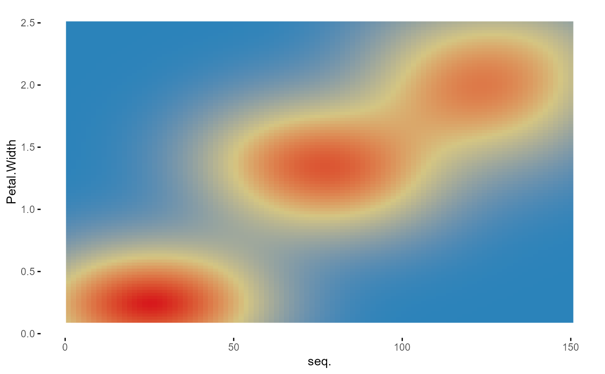

R/70_plotup.R
plotup.RdIn order to present the graphic, the user must define a dataset, at least one variable whitin this dataset and a compatible type of graphic. Future work will include graphics that can combine up to three variables.
plotup(data, vars, diagram, output = "plots pane", dir = tempdir())
| data | Data.frame. Default dataset to use for plot. If not already a data.frame, it should be first coerced to by [as.data.frame()]. |
|---|---|
| vars | Character. A variable within the dataset. |
| diagram | Character. A specific graphic to be presented within the ones considered by the 'logical', 'ordered', 'factor', 'character', 'datetime' and 'numeric' arguments of the 'wideplot()' function. |
| output | Character. Type of output.
|
| dir | Directory in which the files are stored. |
This function returns a c('gg', 'ggplot') object, but if the 'output' argument is set to it 'html' or 'console', the function cause a side-effect: either creating and displaying a temporary html file, or printing the ggplot2 code to the console.
plotup(iris, "Petal.Width", "color heatmap")plotup(iris, "Petal.Width", "color heatmap", output = "console")#> #> ggplot(iris, aes(y=Petal.Width)) + #> stat_density_2d(aes(x=seq_along(Petal.Width), fill = stat(density)), geom = 'raster', contour = FALSE) + #> scale_fill_gradientn(colours = colorRampPalette(rev(RColorBrewer::brewer.pal(4, 'Spectral')))(3)) + #> labs(x='seq.') + #> theme_minimal() + #> theme(panel.grid = element_line(colour = NA), #> axis.ticks = element_line(color = 'black'), #> legend.position='none')